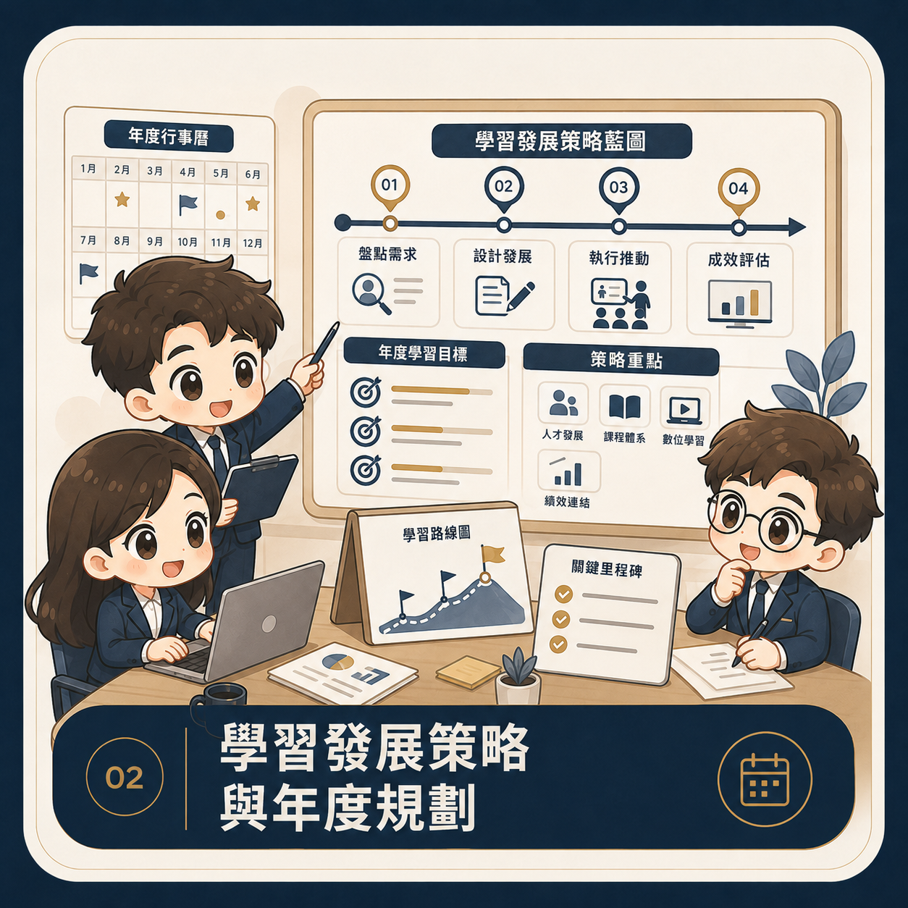
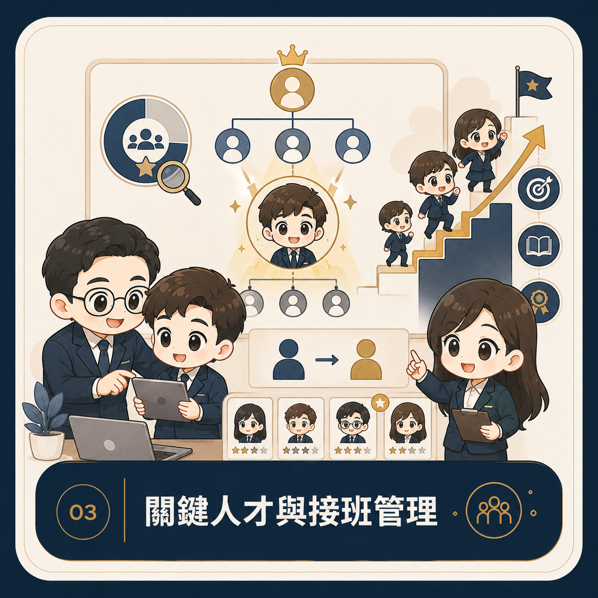
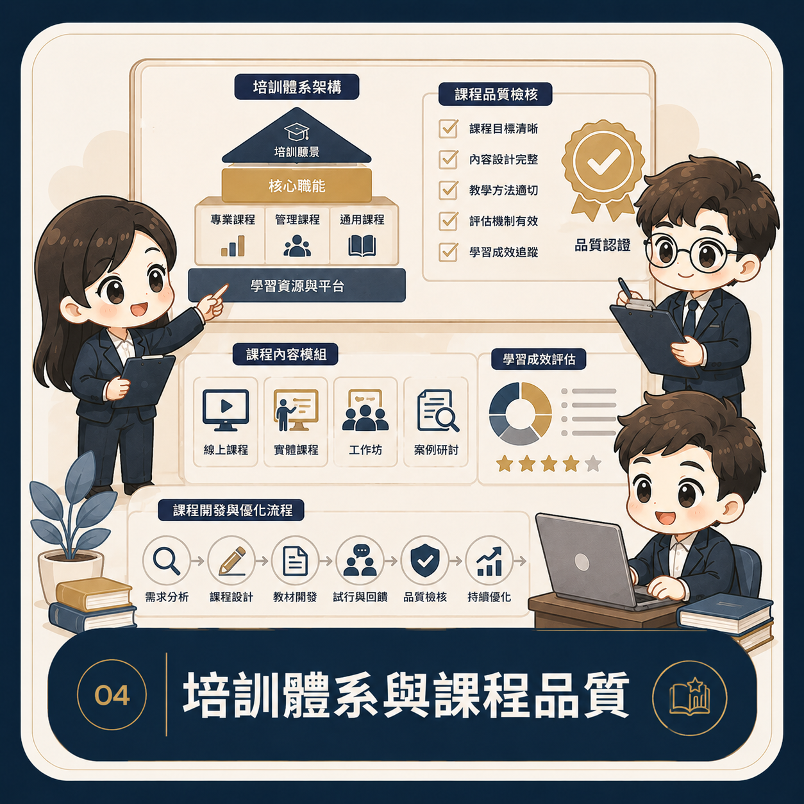

Self Introduction
柯萬群｜人才發展與教育訓練實務工作者
目前從事企業教育訓練與人才發展工作，負責外部訓練、儲備人才與主管培育、職能評核、教材及訓練制度建置。
具連鎖餐飲培訓與門市實務經驗，能整合總部制度、主管管理與第一線需求，將複雜問題轉化為清楚、可執行的培育方案。
我重視的不只是完成一堂課，而是學習能否改變工作行為，並成為組織可持續累積的能力與制度。
About
我相信，好的學習發展不是活動清單，而是一條從組織需求、人才能力到工作績效的清楚路徑。
從職能盤點、培訓規劃到成效追蹤，我將分散的訓練工作整合為可執行、可追蹤、可持續優化的人才發展機制，讓學習真正回到工作現場。
Self Introduction
目前從事企業教育訓練與人才發展工作，負責外部訓練、儲備人才與主管培育、職能評核、教材及訓練制度建置。
具連鎖餐飲培訓與門市實務經驗，能整合總部制度、主管管理與第一線需求，將複雜問題轉化為清楚、可執行的培育方案。
我重視的不只是完成一堂課，而是學習能否改變工作行為，並成為組織可持續累積的能力與制度。
Professional Focus
以制度設計、課程執行與數據追蹤，串起人才培育的每一個環節。
具企業教育訓練與連鎖餐飲人才培育實務經驗，涵蓋內外部課程、主管與儲備人才培育、教材、SOP 及評核制度。
職能盤點、年度 L&D 規劃、OJT 設計、課程品質、LMS 與數位工具，以及訓練成效分析。
從企業目標與職務需求，找出人才培育的優先順序。
整合職能、課程、OJT、評核與追蹤機制。
以學習紀錄與工作成果，檢視培訓價值。
My Approach
以四個步驟串起需求、設計、執行與驗證，讓人才發展真正支持組織與人員成長。
釐清組織目標、職務任務與現場問題，確認需要改善的能力與行為。
依職務與學習階段，規劃課程、教材、OJT 任務與評量方式。
與主管、講師及現場協作，將制度轉化為清楚且可執行的流程。
透過學習紀錄、行為觀察與工作成果，持續優化培訓策略。
Services
依企業階段與策略需求，從單點診斷到完整制度建構，設計真正能被組織採用的解決方案。

建立核心、管理與專業職能地圖，主導 Skill Gap Analysis，找出策略目標與現況能力的落差。

執行 TNA、規劃年度培訓藍圖與預算配置，讓學習資源緊密連結公司策略。

設計 HiPo、IDP、導師制與各階領導力發展體系，追蹤接班梯隊成熟度。

建構實體、線上與混成學習機制，發展內部講師認證，管理外部培訓資源。
導入 LMS、微學習與 AI 輔助工具，建立完整學習歷程及認證紀錄。
運用 Kirkpatrick 模型與 ROI 分析，追蹤完課、認證、行為及績效提升。
設計文化工作坊、知識庫、Best Practice 分享與跨部門學習社群 CoP。
Selected Work
依產業情境、職務層級與學習目標，將課堂學習、現場實作與成效評估整合為可落地的培訓方案。
適用於連鎖餐飲與門市零售產業，以 ADDIE 模式及混成學習設計，協助新任主管快速掌握營運標準、成本控管與人員輔導。
| 階段／單元 | 核心內容 | 授課方式 | 時數 | 評估方式 |
|---|---|---|---|---|
| SOP 落地與品質管理 | SOP 稽核、食品安全、異常通報與緊急應變 | 線上課程＋OJT 實務操演 | 12h | L2 筆試＋L3 現場稽核演練 |
| 營運數據與成本控制 | P&L 初步解讀、人力成本比率、營業額預估與排班最佳化 | 實體工作坊 | 12h | L2 排班表情境測驗 |
| 團隊領導與輔導 | 新人 OJT、1 對 1 輔導、績效溝通與衝突處理 | 角色扮演＋案例研討 | 12h | L3 訓後 60 天留任率與滿意度 |
將資深技術人員與現場主管的實務經驗，轉化為可複製的標準教材，並透過試講、回饋與認證建立內部講師制度。
| 單元 | 課程主題 | 教學法 | 時數 | 產出與作業 |
|---|---|---|---|---|
| Unit 1 | 成人學習心理與 ADDIE 課程架構 | 講授＋心智圖 | 3h | 課程大綱草案 |
| Unit 2 | SOP 轉化為教學簡報與教材 | 案例拆解＋個人實作 | 4h | 15 分鐘教學簡報 |
| Unit 3 | 台上表達技巧與互動控場 | 小組演練 | 3h | 演練評分表校準 |
| Unit 4 | 試講試教與認證評鑑 | 個人演示＋專家點評 | 6h | Pass／Fail 評鑑與修改建議 |
結合接班人計畫與個人發展計畫（IDP），以 70／20／10 學習法則串起課堂、導師輔導及跨部門行動學習。
戰略目標展開（OKR／BSC）、跨部門溝通與利益關係人管理。
配對高階導師進行一對一對話，針對管理痛點進行盲點剖析。
執行跨部門真實業務創新專案，訓後 90 天於經營決策會議發表成果。